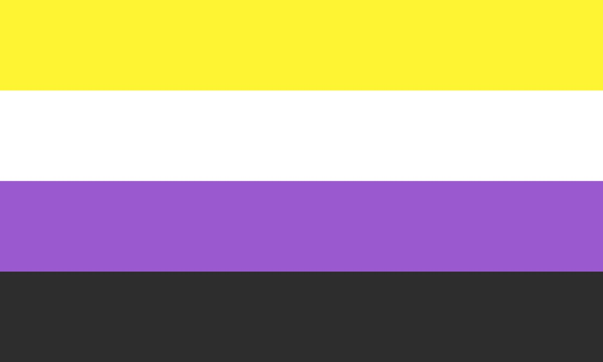
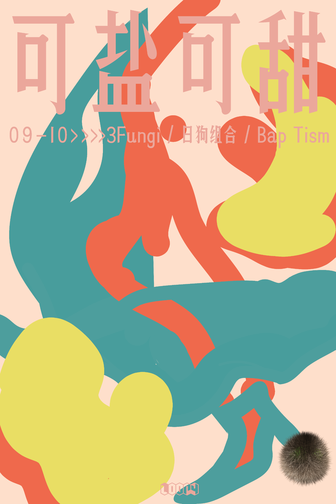
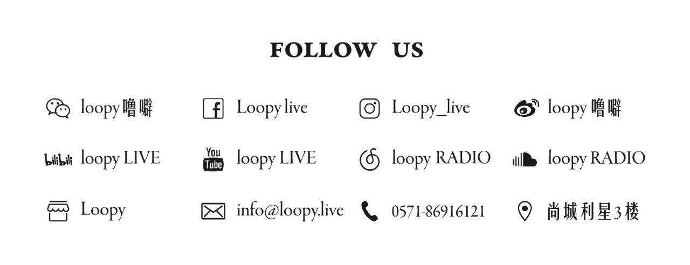

“我们对性别的思考方式不断地
由于性别观念深深地融入了我们的成长和社会化，它成为了我们世界观中最难以被挑战的一个层面之一。而且因为性别化（对一个人的性别的社会分配或指定，通常是基于被感知到的性别）通常是我们人际交往的一个重要方面——从人称代词的使用到我们早已内化的社会脚本，我们对性别的思考方式不断地通过我们的语言和行为展示出来。顺性别者（指那些在出生时被指派的性别与ta们自我认同的性别一致的人）有特权通过人们彼此称呼的既定规范来确定ta们的性别，例如通过性别化的人称代词、尊称（女士、先生、先生、女士）和其他应用于ta们的性别化词语（女人、男人、妻子、丈夫等）。跨性别者（指在出生时被指派的性别与ta们自我认同的性别不一致的人）经常被错误的指认身份。而ta们对这类错误指认的任何冒犯往往会被否定、驳回、嘲讽，甚至是暴力回应。一个直观的例子是，在英语中，我们需要给一个性别不明或未知的人指派一个代词，但常用的代词（he/she）是有性别特指的。在这种情形下，常常由一个阳性的代词（he）代表所谓的性别中立。这显然脱离不了性别歧视的指责。很明显，一套特指性别（gender-specific）的语言使上述情形得以发生。这仅仅是对传统性别观念的沿袭，但忽视了在这套语言中迷失的人们。what to do when someone asks for different gender pronouns如果将目光投向non-binary，这个超越或偏离传统性别区分的身份，也就是说，ta们的自我认同不完全是男性或女性，我们不难意识到一套性别包容的语言的必要性。比如在英语中，将they作为第三人称单数的中性代词，将policeman/policewoman变更为police officer，steward变更为flight attendant，这些微小的举措不仅维护了非二元的人群的自我定义，也对二元性别内的性别歧视/刻板印象具有改良意义。此外，回到跨性别者的讨论，自主选择“相反的”人称代词在性别包容的理念下并不矛盾。总之，人称代词的自主选择，是一种政治宣言，具有颠覆性的能量。每个人都能感受到这样的趋势：地下俱乐部中，非二元的DJ、舞客及其社群逐渐成长，非男同性恋主导的性少数派对得到了极大的发展....Berlin: Fully Automated Luxury Of Oblivion
——突然，从对面的一个小舞台上，出现了三个裸体表演者，ta们优雅地裹着绳索，头上举着蛋糕。每个人都把蛋糕放在椅子上，绕着椅子诱惑地走着。ta们跳起了膝上舞。当at们靠近蛋糕时，呼喊声响起，但ta们仅仅是靠近——一次又一次——却不直接触摸它们。Objekt接进了SOPHIE的 "Faceshopping"。舞池震动了，表演者跨步，举起了ta们的蛋糕。随着节拍的落下，ta们开始把每一块都打成浆糊。
像这样梦幻般的时刻，让新时代的同性恋夜生活熠熠生辉。从历史上看，最受欢迎的同性恋派对都是由男人创造的，为男人服务的。很多人都质疑这是为什么，并努力改变这种状况。不过，现在比以往任何时候都更清楚地看到了一种不同的未来。新一代的同性恋女性主义集体正在为女性、跨性别者和不符合性别的人制作夜生活。
节选自Resident Advisor专题《Sex, techno, feminism: Inside a new generation of queer parties》"The future is Non-binary"
non-binary flag
不妨将目光扩大至电子乐行业，性别不平衡是个老生常谈的话题。激动人心的是，在这样的（二元）讨论中，我们能听到跨性别/非二元音乐人发出的声音——ta们与女性DJ形成团体，在世界各地蓬勃发展，形成了一股巨大的合力。柏林的DJ团体No Shade联合创始人Linnea Palmestål在接受i-D采访时强调，面对白人男性主导的Techno场景，希望将目光集中在女性、跨性别者、非二元化的新手DJ，为ta们提供DJ课程并举办Showcase派对，以帮助缓解世界DJ范围内的性别不平衡。布里斯托尔的组织Saffron也在做类似的事情。ta们仅为女性和非二元人群提供服务，按照每个月5英镑到22英镑的范围收取会员费，基础服务包括工作坊、通讯报告和音乐软件的会员折扣（包括一个免费的Mixcloud Pro账号）。在芝加哥，我们也可以看到Walking & Falling这样面向女性认同和非二元人士的系列工作坊。在中国北京和英国利兹活跃的Equaliser定期举办面向女性、跨性别和非二元性别人士的 DJ工作坊，不定期的讨论会，和由这个群体组织、呈现的跳舞派对，为那些缺乏机会但对电子音乐充满热情的人提供培训、设备和上台表演的机会，也给志同道合的伙伴们提供一个相互认识与交流的空间。
在音乐节这类大型活动中，女性、跨性别者、非二元性别人群的三者的联合体也发出了声音。达勒姆的Moogfest音乐节在2018年的阵容确定上体现了这一点。Moogfest 2018 Lineup | Phase 1 + 2
公共空间往往是我们用来审判和制裁性别的地方，不合性别规范的表达始终被中伤和贬损。而俱乐部作为一个极富变革性的公共空间，蕴含着拥抱突破二元桎梏的酷儿能量，使我们愿意相信建构主义的宣言，并大声发出自己的声音，The future is Non-binary。「可盐可甜」是loopy举办的性少数月度派对，在这里，你可以表达自己定义的性别气质——不用担心异样的眼光，这是一个安全的空间，我们愿意欣赏，并给予你亲切感。

❤️🧡💛💚💙💜
Time: 22:00, 9月10日, 周四 / Thur, 10, Sept.DJs: 3Fungi / 日狗组合 / Bap Tism
Genres: House / Breaks / Club and more
Tickets : 30RMB (含指定酒水一杯including one drink)
点击下方阅读原文了解近期活动详情
以上内容来自loopy噜噼，受微信公众平台限制，有删改。